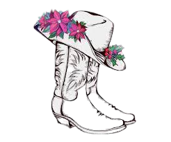

Autumn's Website
“Therefore I tell you, do not worry about your life, what you will eat or
drink; or about your body, what you will wear. Is not life more than food,
and the body more than clothes?
Matthew 6:25 (NIV)

And so, young people, give yourself to the Bible. Give yourself to know the Bible. It will sometimes seem flat emotionally. It will sometimes feel like soaring emotionally. Those two ups and downs are not the issue. It is steady state, long term, occupation with the infallible, powerful word of God that will make oaks of righteousness out of young people when the winds blow. It is wonderful to have these times of worship. We need them. We need them. But we all know that these are the high times. These are the glorious times and the slog it out times are the times that tell whether you have got fiber in your tree or whether you only a week sapling and get blown over.